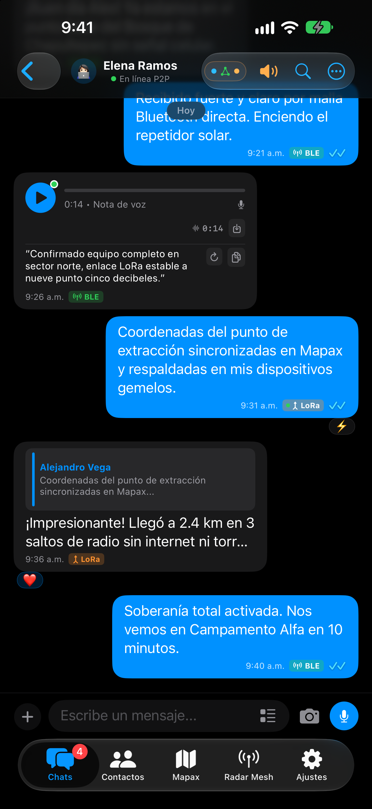

Moment 01 · Right Now
Everything feels normal. Full bars and battery.
You read this page and think: “Cool app, I’ll grab it before my next trip or whenever I need it.” Normalcy bias convinces you the network will always stay online.
Use it at full speed over WiFi or 5G today. And when an earthquake, blackout, storm, remote highway or crowded stadium knocks every other messaging app offline, keep talking phone-to-phone over Bluetooth Mesh and LoRa Radio (+30 km). No servers to crash. No phone number required.
⏱️ 30 seconds today over WiFi · Zero standby battery drain · No SIM card required · Ready when everything else goes silent.
Nobody plans on losing communication. Yet everyone assumes they will still have internet access when it is time to prepare.
You read this page and think: “Cool app, I’ll grab it before my next trip or whenever I need it.” Normalcy bias convinces you the network will always stay online.
Within seconds, cell towers saturate or lose backup power. Your signal bars drop to No Service right when you desperately need to check if your family is safe.
You open the App Store or Google Play, only to face a blank screen. Without signal you cannot download a single megabyte. Being reachable is a choice made 30 seconds before the crisis.
Chax is free, weighs less than three photos, and sleeps without draining battery. But an emergency network needs at least two phones: install it today and send it right now to the 3 people you cannot afford to lose track of.
Built to delight over fast WiFi/5G daily, and engineered to become a tactical survival link the instant signal disappears.
Chax stores crisp street and satellite maps directly on your device alongside a live directional radar toward your contacts and local path tracking—without spending a single cellular byte.

With tactical autoplay enabled, incoming voice dispatches play automatically out loud through your speaker while your phone stays safely in a pocket, backpack, or handlebar mount.

Your cryptographic identity is born locally on your phone. Pair via QR code in 2 seconds before trips or emergencies: nobody can suspend your account or harvest your address book.

Compress visual cutouts to ~25 KB so moments and visual cues travel cleanly over direct Bluetooth Mesh when cellular towers are completely unreachable.
Create private family groups, trail squads, or neighborhood alert channels with flexible moderation. Seamlessly chat from your Mac desktop with full keyboard support.
Set automatic wipe timers (1 Hour, 24 Hours, or 7 Days) or trigger the one-tap Panic Protocol. When time expires, Chax atomically scrubs RAM and encrypted local flash storage.
No ports to configure and no settings to toggle when reception vanishes. Chax automatically picks the fastest living route.
When WiFi or 5G is up, messages cross continents in milliseconds through decentralized, encrypted Nostr WAN relays.
Within 100 m, voice and text jump straight phone-to-phone with zero mobile data—even in airplane mode or dead highways.
During blackouts or packed stadiums, sealed packets hop encrypted across nearby Chax phones to escape dead zones.
Pair a pocket LoRa node over BLE to bridge valleys, mountain ridges, or darkened cities without carriers.
The second any of these strikes, opening a store to download an app is no longer an option.
With Chax pre-installed: Your phone wakes its local neighborhood mesh. Check-ins hop building to building and reach up to 30 km with a LoRa link.
With Chax pre-installed: Navigate with stored satellite Mapax, measure exact meter-level distance to friends, and coordinate hands-free with zero cellular data.
With Chax pre-installed: Chax bypasses congested towers completely and hops across nearby festival phones in milliseconds.
With Chax pre-installed: Zero central bottlenecks, zero SIM dependency, and autonomous key-to-key encryption you control outright.
On normal days they look similar. The minute infrastructure drops, nothing else comes close.
| Scenario or Capability | CHAX | Centralized Messaging | Cloud Chat Apps | Traditional Messengers |
|---|---|---|---|---|
| Works when cell & WiFi infrastructure dies | ✓ Instant autonomous mesh | ✕ Unreachable | ✕ Unreachable | ✕ Unreachable |
| Everyday speed over WiFi / 5G | ✓ Real-time multi-relay | ✓ Cloud dependent | ✓ Cloud dependent | ✓ Cloud dependent |
| No phone number or SIM required | ✓ Zero personal data | ✕ Mandatory | ✕ Mandatory | ✕ Mandatory |
| Built-in offline satellite & street maps | ✓ Streets + Satellite | ✕ None | ✕ None | ✕ None |
| Lock-screen voice autoplay | ✓ Even off-grid | ✕ Requires cloud | ✕ Requires cloud | ✕ Requires cloud |
| LoRa Radio support (+30 km) | ✓ 915 / 868 MHz native | ✕ Unsupported | ✕ Unsupported | ✕ Unsupported |
| Anti-forensic flash autopurge | ✓ 1h, 24h, 7d or Panic | ✕ Server logs | ✕ Cloud history | ✕ Central copies |
Install free in 30 seconds while you still have WiFi or data. When the signal bars drop, it will already be waiting in your pocket.